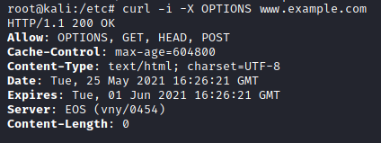
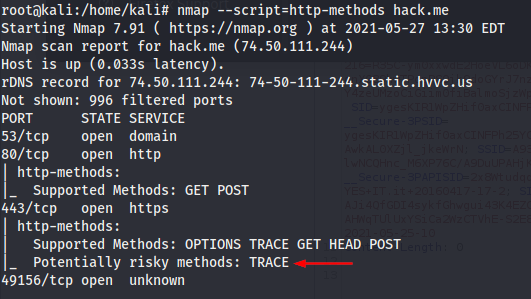

Test HTTP Methods
HTTP offers a number of methods(seen already HERE) that can be used to perform actions on the web server.
These HTTP methods can be used for nefarious purposes if the web server is misconfigured.
Some of these methods can potentially pose a security risk for a web application, as they allow an attacker to modify the files stored on the web server and, in some scenarios, steal the credentials of legitimate users. More specifically, the methods that should be disabled are the following:
• PUT: This method allows a client to upload new files on the web server. An attacker can exploit it by uploading malicious files (e.g.: an asp file that executes commands by invoking cmd.exe), or by simply using the victim's server as a file repository.
• DELETE: This method allows a client to delete a file on the web server. An attacker can exploit it as a very simple and direct way to deface a web site or to mount a DoS attack.
• CONNECT: This method could allow a client to use the web server as a proxy.
• TRACE: This method simply echoes back to the client whatever string has been sent to the server, and is used mainly for debugging purposes. This method, originally assumed harmless, can be used to mount an attack known as Cross Site Tracing, which has been discovered by Jeremiah Grossman (see links at the bottom of the page).
Test:
• OPTIONS method
◇ nc
printf "OPTIONS / HTTP/1.1\r\nHost:www.example.com\r\n\r\n" | nc www.example.com 80

◇ curl
curl -i -X OPTIONS <IP>

• nmap NSE: http-methods
nmap --script=http-methods hack.me

Bibliography:
• https://kennel209.gitbooks.io/owasp-testing-guide-v4/content/en/web_application_security_testing/test_http_methods_otg-config-006.html